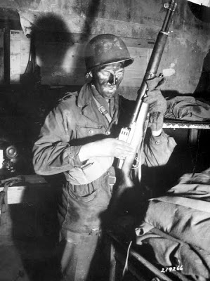

Courtesy of CUATF.org.
Newell testifies.
McMahon testifies. (Demonic eyes are a nice touch.)
Holder testifies.
Wednesday, November 30, 2011


FOX: 'Fast and Furious' Whistleblowers Struggle Six Months After Testifying Against ATF Program. Why don't the GOP leaders defund the retaliators?
This is a fact, and actually underplays some of the crap these guys are experiencing. The question is, what does the Isaa Committee intend to do about it besides talk? The House has the purse strings, right? Then why don't they defund the retaliators? Perhaps because they're not serious?
Link.
NOTE: Still out and about. More later.
Link.
And while President Obama has said the operation was a mistake and that "people who screwed up will be held accountable," the record so far does not bear that out. Those in charge of the botched operation have been reassigned or promoted, their pensions intact. But many of those who blew the whistle face isolation, retaliation and transfer.
NOTE: Still out and about. More later.
More later, but right now I'm headed out . . .
to see the doctor, pay some bills and to pick up my new pistol permit and thereby begin packing with the approval of the gub'mint. (Sound of teeth grinding.) I will have more posts later.
If you had told me even a month ago that I would be mirroring an ad from the DNC while praying for an Obama veto, I'd have said you were crazy.
Senate defies Obama veto threat in terrorist custody vote.
Does anybody here seriously think that there is anything in this bill preventing the Obama White House from having the military kidnap troublesome guys like me, secretly, in the dead of night, putting black hoods on our heads, and taking them off to Guantanamo, without hearing or trial? Nothing will prevent it except one thing: the copper-jacketed promise that if the rule of law no longer obtains then the rule of the rifle has obviously begun. Unintended consequences? Perhaps. Stupid? Certainly. Possible? Oh, yes.
So while I'm praying for an Obama veto, I might as well post an ad from the Democratic National Committee on Windsock Mitt Romney:
Defying a veto threat by President Obama, the Senate voted Tuesday to give the U.S. military first crack at holding al Qaeda operatives, even if they are captured in the U.S. and are American citizens, and also reaffirmed the policy of indefinite detention.
“We’re no longer going to have an absurd result that if we capture you overseas where you’re planning an attack on the United States, we can blow you up or put you in a military prison indefinitely, but if you make it to America, all of a sudden you get Miranda rights and you go to federal court,” said Sen. Lindsey Graham, a South Carolina Republican who has fought the Bush and Obama administrations on treatment of suspected terrorist detainees.
Tuesday’s 61-37 vote to buck Mr. Obama and grant the military dibs exposed a deep rift within the Democratic Party. Sixteen Democrats and one independent who caucuses with them defied the veto threat and joined 44 Republicans.
Does anybody here seriously think that there is anything in this bill preventing the Obama White House from having the military kidnap troublesome guys like me, secretly, in the dead of night, putting black hoods on our heads, and taking them off to Guantanamo, without hearing or trial? Nothing will prevent it except one thing: the copper-jacketed promise that if the rule of law no longer obtains then the rule of the rifle has obviously begun. Unintended consequences? Perhaps. Stupid? Certainly. Possible? Oh, yes.
So while I'm praying for an Obama veto, I might as well post an ad from the Democratic National Committee on Windsock Mitt Romney:
Liars always think they're being lied to, thieves fear theft & conspirators suspect conspiracy where none exists. Daily Caller on Holder paranoia fit
Sipsey Street is happy to provide the background music for this post. Click on this Coasters classic as you read the post below. This song is reputed to be Eric Holder's favorite these days as his Gunwalker mental breakdown slowly advances.

"Why's everybody always picking on me?"
"Holder lashes out at The Daily Caller while refusing to address growing calls for his resignation."
I think the guy is losing it.
Give a listen after the Coasters quit singing Holder's song:

"Why's everybody always picking on me?"
"Holder lashes out at The Daily Caller while refusing to address growing calls for his resignation."
Embattled Attorney General Eric Holder today demanded The Daily Caller stop publishing articles about the growing calls in Congress for his resignation because of the failed Operation Fast and Furious gun-walking program.
As Holder’s aide was escorting the attorney general offstage following his remarks Tuesday afternoon at the White House, a Daily Caller reporter introduced himself and shook Holder’s hand. The reporter asked him for a response to the growing chorus of federal legislators demanding his resignation.
Holder stepped towards the exit, then turned around, stepped back toward the reporter, and sternly said, “You guys need to — you need to stop this. It’s not an organic thing that’s just happening. You guys are behind it.”
Holder then walked offstage without answering TheDC’s request for comment about calls for his resignation.
I think the guy is losing it.
Give a listen after the Coasters quit singing Holder's song:
Tuesday, November 29, 2011
Only a matter of time, I guess, before Joe Lieberman, or somebody else, persuades Google to crash this site.
"Lieberman To Google: Ban Terrorist Content."
I trust that someone is downloading this site so it can be saved when somebody at Google pulls the plug. Can someone suggest a move to another host less sensitive to repressive government whims?
In the wake of news that terror suspect Jose Pimentel was operating a jihadist Blogger site, Sen. Joe Lieberman (I-CT) is urging Google to implement a system that bans terrorist material.
Last week, Lieberman sent a letter to Google CEO Larry Page on behalf of the Senate Committee on Homeland Security and Governmental Affairs that called on Google to ramp up its efforts against terrorist material on the Blogger platform.
Pimentel’s “hate-filled writings” and “bomb-making instruction links” were littered throughout www.trueislam1.com, his Google-hosted Blogger site, Lieberman noted. Pimentel has been accused of attempting to plan what’s being described as a “lone wolf” terrorist attack by using pipe bombs.
“As demonstrated by this recent case, Google’s webhosting site, Blogger is being used by violent Islamist extremists to broadcast terrorist content,” he wrote. “Pimentel’s site is just one of the many examples of homegrown terrorists using Google-hosted sites to propagate their violent ideology.”
Lieberman pointed to YouTube’s Community Standards as a model for Blogger to build its policy after. YouTube, which is run by Google, prohibited terrorist content on its servers in September 2008. In November of last year, Google introduced a flag button on the YouTube platform – something that Lieberman has pushed for in hopes of Blogger preventing a future situation similar to the one involving Pimentel.
“I continue to appreciate and commend these important first steps but I am disappointed that Google has not developed a consistent standard throughout its many platforms,” he wrote. “Unlike YouTube’s Community Standards, Blogger’s Content Policy does not expressly ban terrorist content nor does it provide a ‘flag’ feature for such content.”
A Google spokesperson told CBS Connecticut that these issues against terrorist that Lieberman has pointed out are being taken under consideration.
“These are important issues that we take seriously,” the spokesperson said. “Blogger’s content policies prohibit, among other things, dangerous and illegal activities, threats of violence, and encouraging others to take violent action against another person or group of people.”
I trust that someone is downloading this site so it can be saved when somebody at Google pulls the plug. Can someone suggest a move to another host less sensitive to repressive government whims?
A victim of his own self-induced conflation, ADL's Mark Pitcavage crashes and burns.
A tip of the boonie hat and deep genuflection to Alvie D. Zane at The Cliffs of Insanity for discovering this image of the ADL's Mark Pitcavage, apparently taken just this afternoon outside ADL headquarters.
Oh, the horror! The horror!
"Anti-government extremists! Anti-government extremists! Anti-government . . . AAAAARGH! It burns us! It burns us!"
Oh, the horror! The horror!

"Anti-government extremists! Anti-government extremists! Anti-government . . . AAAAARGH! It burns us! It burns us!"
Well, well, well. What do you know about this, Mr. President?

Doug Ross at Director Blue asks "What did President Obama know -- and when did he know it?"
Newly released White House Visitor Logs list Grindler as having visited the White House 40 times, but only four times with the President himself. All four meetings with the President occurred over a two-week period, between 7 May 2010 and 19 May 2010. . .
Summary: In early 2010, Gary Grindler was intimately involved in all aspects of Operation Fast and Furious. During the height of the operation, Grindler visited the President on four separate occasions in only two weeks -- his only documented meetings with the president at the White House.
So my question is this:
What did President Obama know -- and when did he know it?
Doug gives a hat tip to Michelle Malkin's column "Did you miss the Thanksgiving White House visitor log document dump?"
"Facts are stubborn things." Bad moon rising for Holder.

Dave Workman draws our attention to two statements by Senator Grassley:
Knowledge of Connection Between Agent Terry’s Death and Fast and Furious and Connection Between Fast and Furious and Agent Terry’s Death
You have to ask yourself: Why is the Regime so afraid of jury nullification that they pursue the least threat of it with blind fanaticism?

Julian P. Heicklen, 79-year-old retired chemistry professor and enemy of the state.
Prosecution Explains Jury Tampering Charge.
‘You Guys Are Behind This’: Eric Holder Says Daily Caller Pushing For His Resignation.
Another vast right-wing conspiracy attacks Eric Holder unfairly. Pretty funny.
A guy who doesn't know shit from Shinola talks to another guy who has both shit for brains & an agenda to craft an expert opinion about . . . me.
A photographic scorecard for this story:
This is Shinola.
This is Tim Steller of the Arizona Daily Star. (Tiny head evidently actual size.)
This is a self-posted Facebook image of ADL attack blimp Mark Pitcavage. He used to troll for names on the Internet to provide the FBI back in 90s.
This is Sparky, the Militia Watchdog, from back during the Clintonista Regime. Last seen almost a decade ago, rumor has it that Pitcavage sat on him and didn't notice for a week. Poor Sparky. He even looks sad, do you notice? Almost as if he knew his fate.
I assume y'all know what shit looks like, gentle readers, so I'll skip that illustration.
The headline: "The blogger who broke Fast and Furious prepares for US revolution."
The story, with my comments ad seriatim:
"A new American revolution"? Not my words. Long-time readers will recognize that the only "revolution" that I believe has been going on here is that of a Gramscian nature waged by domestic enemies of the Founders' Republic against that system of government and the rule of law. We are fighting for a restoration of that republic against the revolutionaries of collectivism. Had the sentence stated "civil war with the American armed citizenry" then it would have been accurate.
"Eager"? Is there anyone here who has read my stuff who believes that I am "eager" for civil war? Or that I have ever seemed "eager"? What a lying sack of shit.
I get a crapton of email a day, and I didn't recall this one, so I just went back and looked over my new and old email files and on a quick scan I can't find any such email. I delete far more emails than I read, but it would be very unlikely for me to delete one of Steller's unread, for I know who he is. With that caveat, I'm not willing to call him a liar on that. Perhaps he should re-send it. Or, he could have done due diligence and cast around to find other reporters for my phone number. He must not have been that curious about my responses to his questions. It is easier to write a story with its meme unchallenged.
Actually, I was referring to PATCON, of which the OKC bombing was only a part, and no, I don't believe that the FBI blew up the building or even wanted the building to blow up. I think that it, unlike the Gunwalker Scandal, OKC and the Aryan Republican Army actually was a "sting gone bad." J.D. Cash believed that, and so do I. The language here is curious: "Vanderboegh was involved in the militia movement of the 1990s and appears to blame the U.S. government for the excesses that came out of that movement." He then refers to Waco and OKC. Uh, ascribing blame for Waco as "an excess that came out of the militia movement" when Waco actually pre-dated the constitutional militia movement and was the direct cause of its organizing is a bit bizarre to say the least. And as for the OKC bombing as a representation of "militia excesses" when McVeigh, to my knowledge, was thrown out of the only Michigan Militia meeting he ever attended, is part-and-parcel of what Professor Robert Churchill called "The Narrative of 1995." Perhaps Steller should read Churchill's book.
Ah yes, Pitcavage. Mark Pitcavage used to troll the Internet and sell names of "militia threats," including mine, to the FBI. He ran a site called "The Militia Watchdog" and Sparky (as seen above) was his logo. We crossed swords many times, Spitcabbage and me. His FBI "confidential informant" file would make interesting reading. He parlayed this into a job with ADL as their "militia expert."
Here's an old militia joke from the 90s:
What is the difference, if any, between Mark Pitcavage and the Hindenburg?

This is Mark Pitcavage in his natural element.
This is the Hindenburg.
Answer: There are two. First, although both are gasbags and serve the commercial interests of a nascent collectivist tyranny, the Hindenburg was a dirigible whereas Pitcavage is a blimp. Second, Pitcavage has not yet spontaneously burst into flames.
Hope springs eternal.
Pitcavage's next description of me is hardly accurate, but it is all we who have followed his lying career over the years have come to expect from Sparky's erstwhile master.
The truth is the constitutional militia movement, as opposed to the "millennials" (again, see Churchill's "To Shake Their Guns in the Tyrant's Face"), didn't suffer any "tailspin," and I only stepped down as commander of 1ACR when it was obvious that I was too old, fat and infirm to lead troops. 1ACR, in its component parts under subordinate leaders, still exists, and as for "jumping ship," Pitcavage knows that that is a damn lie. Throughout the early 2000s I contributed in a hundred ways to the constitutional militia movement overall, picking up the description from a "main-stream" reporter as "The Grey Eminence" of the movement. When my old friend Bob Wright got involved in the Minutemen in 2005, I took elements of 1ACR and went out to help him in October of that year. I saw this, then and now, as simply an extension of the militia citizenship ideal.
Pitcavage, whose personal relationship with ponies involves frightening them to death whenever he nears with the prospect that he might actually try to ride them, implies some sort serial inconstancy on my part as if it is notoriety I am seeking through a variety of failed enterprises. Nothing that I have done since 1993 is inconsistent with my own belief in the efficacy of the armed citizenry to deter tyranny and work toward that end -- with pen, or rifle, or, in the case of the Minuteman vigil in 2005, with seismic intrusion detector and night vision device.
Pitcavage also tips his hand with that old Brown Scare bromide "anti-government extremists." The advocates and lickspittles of the Federal Leviathan (of which class Pitcavage is surely one) always classify their opponents as "anti-government." I know of no one, save unthinking self-proclaimed anarchists (and there are thinking anarchists who are Threepers), who is actually "anti-government." Now I am anti-BIG government, anti-DANGEROUS government and anti-TYRANNICAL government. It is no accident that collectivist pukes like Pitcavage and Morris Dees seek legitimacy for their own vision of government and heap scorn on their opponents who do not share it through misuse of language. That is the oldest collectivist trick in the book. (Reference: "Arbeit Macht Frei.")
Fair enough.
"What he said were. . ." Don't you just love the weasel words? Actually, I have been waiting for Newsweek to deny my article so I can print emails with their addresses on them in refutation. This squirrel of a "reporter," who lives in Arizona at Gunwalker Ground Zero, can't find a nut of his own in a forest of oak trees and then casts doubt on MY journalistic skills? Hey, you can doubt my ancestry, Steller, but don't doubt my footnotes.
Sorry, I've run out of enough spittle to dignify that last bullshit with the contempt that it deserves.
But, hey, Steller, if you actually want to communicate with someone you write about like any other reporter, why don't you give it a try? I ain't going anywhere. And my exclusives will keep on coming, whether you like the source they came from or not.

This is Shinola.

This is Tim Steller of the Arizona Daily Star. (Tiny head evidently actual size.)

This is a self-posted Facebook image of ADL attack blimp Mark Pitcavage. He used to troll for names on the Internet to provide the FBI back in 90s.

This is Sparky, the Militia Watchdog, from back during the Clintonista Regime. Last seen almost a decade ago, rumor has it that Pitcavage sat on him and didn't notice for a week. Poor Sparky. He even looks sad, do you notice? Almost as if he knew his fate.
I assume y'all know what shit looks like, gentle readers, so I'll skip that illustration.
The headline: "The blogger who broke Fast and Furious prepares for US revolution."
The story, with my comments ad seriatim:
The Republic published a long, interesting story Sunday on Operation Fast and Furious, and it included interviews with Mike Vanderboegh and David Codrea. These are the two pro-gun-rights bloggers who first opened the window on the disgraced ATF investigation in late December 2010.
As often happens when you break a story, the scoops have kept coming, and Vanderboegh in particular has become a go-to source for information on the Fast and Furious scandal. What newcomers to his Sipsey Street Irregulars blog may find surprising is the broader theme of the blog, which perhaps can be summarized as: The out-of-control federal government is poised to start a new American revolution among gun owners.
"A new American revolution"? Not my words. Long-time readers will recognize that the only "revolution" that I believe has been going on here is that of a Gramscian nature waged by domestic enemies of the Founders' Republic against that system of government and the rule of law. We are fighting for a restoration of that republic against the revolutionaries of collectivism. Had the sentence stated "civil war with the American armed citizenry" then it would have been accurate.
While Vanderboegh has done a good job exposing Fast and Furious in the last year, he remains what he was before: A man so convinced that the federal government has turned totalitarian that he has declared himself willing, even occasionally seeming eager, to engage in war against it. As with many gun-rights activists, he foresees the moment of truth as when the feds come to take Americans' guns — that's when the shooting war would begin.
"Eager"? Is there anyone here who has read my stuff who believes that I am "eager" for civil war? Or that I have ever seemed "eager"? What a lying sack of shit.
I've emailed Vanderboegh some questions about his views outside of the Fast and Furious case and am awaiting a response. I'll update when I get it.
I get a crapton of email a day, and I didn't recall this one, so I just went back and looked over my new and old email files and on a quick scan I can't find any such email. I delete far more emails than I read, but it would be very unlikely for me to delete one of Steller's unread, for I know who he is. With that caveat, I'm not willing to call him a liar on that. Perhaps he should re-send it. Or, he could have done due diligence and cast around to find other reporters for my phone number. He must not have been that curious about my responses to his questions. It is easier to write a story with its meme unchallenged.
Vanderboegh may have first come to the attention of Southern Arizona residents last year during the debate over health-care reform. On March 19, 2010 he posted this blog item, encouraging "all modern Sons of Liberty" to break windows at Democratic Party offices around the country. Two days later, the glass door at U.S. Rep. Gabrielle Giffords' Tucson office was smashed. It was one of about a half-dozen such incidents in the days after his call.
Vanderboegh was involved in the militia movement of the 1990s and appears to blame the U.S. government for the excesses that came out of that movement. Not only was the Waco disaster the government's fault, according to Vanderboegh, but the Oklahoma City bombing was as well. He calls it "The greatest crime ever perpetrated by the Federal Bureau of Investigation."
Actually, I was referring to PATCON, of which the OKC bombing was only a part, and no, I don't believe that the FBI blew up the building or even wanted the building to blow up. I think that it, unlike the Gunwalker Scandal, OKC and the Aryan Republican Army actually was a "sting gone bad." J.D. Cash believed that, and so do I. The language here is curious: "Vanderboegh was involved in the militia movement of the 1990s and appears to blame the U.S. government for the excesses that came out of that movement." He then refers to Waco and OKC. Uh, ascribing blame for Waco as "an excess that came out of the militia movement" when Waco actually pre-dated the constitutional militia movement and was the direct cause of its organizing is a bit bizarre to say the least. And as for the OKC bombing as a representation of "militia excesses" when McVeigh, to my knowledge, was thrown out of the only Michigan Militia meeting he ever attended, is part-and-parcel of what Professor Robert Churchill called "The Narrative of 1995." Perhaps Steller should read Churchill's book.
This was Vanderboegh's first claim to fame, says Mark Pitcavage of the Anti-Defamation League, who has been aware of Vanderboegh for 15 years.
"He became a big early proponent — and this is where he got his notoriety in the 1990s — of Oklahoma City conspiracy theories. 'Timothy McVeigh was a patsy. The government was actually involved.' He did a lot to popularize this," Pitcavage said.
Ah yes, Pitcavage. Mark Pitcavage used to troll the Internet and sell names of "militia threats," including mine, to the FBI. He ran a site called "The Militia Watchdog" and Sparky (as seen above) was his logo. We crossed swords many times, Spitcabbage and me. His FBI "confidential informant" file would make interesting reading. He parlayed this into a job with ADL as their "militia expert."
Here's an old militia joke from the 90s:
What is the difference, if any, between Mark Pitcavage and the Hindenburg?

This is Mark Pitcavage in his natural element.

This is the Hindenburg.
Answer: There are two. First, although both are gasbags and serve the commercial interests of a nascent collectivist tyranny, the Hindenburg was a dirigible whereas Pitcavage is a blimp. Second, Pitcavage has not yet spontaneously burst into flames.

Hope springs eternal.
Pitcavage's next description of me is hardly accurate, but it is all we who have followed his lying career over the years have come to expect from Sparky's erstwhile master.
"In the late 90s and early 2000s, the militia movement went into a tailspin. It was at that point that Mike jumped ship. In the mid-2000s, he became involved in the Minutemen."
The truth is the constitutional militia movement, as opposed to the "millennials" (again, see Churchill's "To Shake Their Guns in the Tyrant's Face"), didn't suffer any "tailspin," and I only stepped down as commander of 1ACR when it was obvious that I was too old, fat and infirm to lead troops. 1ACR, in its component parts under subordinate leaders, still exists, and as for "jumping ship," Pitcavage knows that that is a damn lie. Throughout the early 2000s I contributed in a hundred ways to the constitutional militia movement overall, picking up the description from a "main-stream" reporter as "The Grey Eminence" of the movement. When my old friend Bob Wright got involved in the Minutemen in 2005, I took elements of 1ACR and went out to help him in October of that year. I saw this, then and now, as simply an extension of the militia citizenship ideal.
"He rode that pony for a while. More recently, he dropped that and started his Sipsey Street Irregulars blog. He started the Three Percenter concept, which has caught on among anti-government extremists."
Pitcavage, whose personal relationship with ponies involves frightening them to death whenever he nears with the prospect that he might actually try to ride them, implies some sort serial inconstancy on my part as if it is notoriety I am seeking through a variety of failed enterprises. Nothing that I have done since 1993 is inconsistent with my own belief in the efficacy of the armed citizenry to deter tyranny and work toward that end -- with pen, or rifle, or, in the case of the Minuteman vigil in 2005, with seismic intrusion detector and night vision device.
Pitcavage also tips his hand with that old Brown Scare bromide "anti-government extremists." The advocates and lickspittles of the Federal Leviathan (of which class Pitcavage is surely one) always classify their opponents as "anti-government." I know of no one, save unthinking self-proclaimed anarchists (and there are thinking anarchists who are Threepers), who is actually "anti-government." Now I am anti-BIG government, anti-DANGEROUS government and anti-TYRANNICAL government. It is no accident that collectivist pukes like Pitcavage and Morris Dees seek legitimacy for their own vision of government and heap scorn on their opponents who do not share it through misuse of language. That is the oldest collectivist trick in the book. (Reference: "Arbeit Macht Frei.")
The Three Percenter idea derives from the fact (as Vanderboegh explains it) that at the time of the American Revolution, only three percent of the population fought against the king. Vanderboegh explains the present-day Three Percenters this way:"We are committed to the restoration of the Founders' Republic, and are willing to fight, die and, if forced by any would-be oppressor, to kill in the defense of ourselves and the Constitution that we all took an oath to uphold against enemies foreign and domestic."
Most recently, Vanderboegh was in the news when four Georgia men were arrested and accused of plotting terrorist attacks against the federal government. A book Vanderboegh has written, titled Absolved, inspired the men, though Vanderboegh said he has never communicated with them. The U.S. News and World Report had this interesting story on the case.
Fair enough.
Why does all this background on Vanderboegh matter? Well, I enjoy reading his blog, and have found in my couple of months following the Fast and Furious story that he has often been first in putting out details of the scandal. (He also had an impressive scoop last week when he published what he said were portions of an original draft of a Newsweek story about a man who for years worked as an FBI informant among white supremacists.)
"What he said were. . ." Don't you just love the weasel words? Actually, I have been waiting for Newsweek to deny my article so I can print emails with their addresses on them in refutation. This squirrel of a "reporter," who lives in Arizona at Gunwalker Ground Zero, can't find a nut of his own in a forest of oak trees and then casts doubt on MY journalistic skills? Hey, you can doubt my ancestry, Steller, but don't doubt my footnotes.
But I read the blog just for new facts on Fast and Furious and as a measure of what is interesting gun-rights fundamentalists. I often find Vanderboegh's interpretation of the facts to stretch the limits of credibility and to derive from his view of himself as a rebel leader in the run-up to the next American revolution.
Sorry, I've run out of enough spittle to dignify that last bullshit with the contempt that it deserves.
But, hey, Steller, if you actually want to communicate with someone you write about like any other reporter, why don't you give it a try? I ain't going anywhere. And my exclusives will keep on coming, whether you like the source they came from or not.

Mordor-on-the-Potomac gets a Palantir. Really.

Palantir, the War on Terror's Secret Weapon
A Silicon Valley startup that collates threats has quietly become indispensable to the U.S. intelligence community
Monday, November 28, 2011
SSI Exclusive: FBI put pressure on Newsweek to keep details of PATCON Brown's Ferry Nuclear conspiracy quiet. Radioactive 302s & black bag jobs.

Brown's Ferry Nuclear Plant on the Tennessee River, north Alabama.
(NOTE: There were a lot of problems getting the documents to load properly both here and at Scribd but those problems should now be solved. If anyone has any further problem seeing the documents, please drop us a comment or an email. -- MBV)
Sources tell Sispey Street that the home of John Matthews' daughter was broken into over the weekend and although a television, an X-box and a small steel lockbox containing papers and a handgun were stolen, the burglars left behind prescription pain medicine, cash, and other valuable items. It wasn't because the burglars didn't find them, for "the entire place was completely trashed, they even tore apart the beds and bedding," said one source. "It was as if they were searching for something they didn't find it," the source said.
Other sources tell Sipsey Street that private email files belonging to Matthews and people who have corresponded with him have literally disappeared from folders on home computers without explanation.
When I informed another DC source of mine of these developments, he commented, "Well, they're either looking for more documents they think Matthews has hidden or they are just trying to send a message that they can get to his daughter so he'd better shut up." The source then added, rhetorically, "Do you really think that the FBI ever gave up the black bag job as a tool of enforcement?" He paused, and added, "And I don't mean law enforcement."
Speculation as to what documents the FBI may be looking for has centered on unredacted FBI invesitigative reports, called FD-302s, having to do with the plot Matthews reported that dealt with the Browns' Ferry Nuclear Power Plant in Alabama. Sources tell Sipsey Street that the FBI put pressure on Newseek reporters and editors not to print details of this portion of Matthews story. Said one, "These allegations didn't even make it into the rough draft of the Newsweek story because the FBI asked them not to print (details) about Browns' Ferry."
Copies of those unredacted FD-302s have now been obtained by Sipsey Street and may be found here as well as embedded at the end of this story.
Readers will recall these paragraphs deleted from the Newsweek story that seemed to suggest that Tom Posey was a federal asset and that the Browns' Ferry case allegatios were deep-sixed by the prosecution in order to protect him:
1. The missing paragraphs that presented evidence that Tom Posey, the supposed chief conspirator whose crazy talk about using weapons of mass destruction first prompted Matthews to go to the FBI, may himself have been a government asset. From the original story as written, before Tina Brown's felt tip marker excised it:If it is indeed these documents that the burglars of John Matthews' daughter's home were looking for, Sipsey Street is more than happy to post them here and save them further trouble. And the FBI, I'm sure, must be wondering what else besides these 302s are still out there.After Posey’s arrest, the FBI had Matthews Social Security number changed, and paid for him and his family to move to Stockton , California . Yet the trial in Alabama proved frustrating for him. Despite hundreds of hours of recorded conversations, as well as video and personal surveillance, the Justice Department only chose to prosecute Posey and his cohorts for buying and selling the stolen night vision goggles. And in the end, Posey was sentenced to just two years in prison.
A spokeswoman for the Justice Department in Birmingham said there simply wasn’t enough evidence to prosecute Posey for the Brown’s Ferry plot. Yet curiously, the TVA denied that the plot or the weapons cache even existed. Meanwhile, several of the men involved in the planned robbery were never arrested. At the time, two of the men, Matthews says, were planning to blow up a federal building in Birmingham .
“They were gonna take a truck filled with fertilizer,” says Matthews. “You look at what Timothy McVeigh done, it’s basically the same thing. “What happened in Oklahoma could have happened a couple of years earlier.”
One possible explanation for how Posey’s trial played out: In 1996, the year he was released from prison, Posey appears to have been issued a new Social Security number, according to a Lexis-Nexus search conducted by Newsweek. Tony Gooch, a friend and Posey’s and a former CMA member, said that Posey was innocent of any wrongdoing, and that the whole Brown’s Ferry plot had been cooked up by Matthews. “Tom was a good man,” he says. “John did not endear himself to us with that story.” Yet Gooch said that Posey may have felt forced to cut a deal with the Justice Department, and provide them with information on other groups in the movement, or agreed not to reveal what he knew about Iran Contra.
“It wouldn’t surprise me,” Gooch said. “Tom knew some people who were real hardcore.”
Mind you, I am speaking from mere experienced speculation here, but I do recall that after the unsuccessful assassination attempt of Pete Langan behind the Columbus, Ohio ARA safe house when the raid team unexpectedly pulled his living body out of the riddled van as alley neighbors watched from second-story balconies, Langan was able to keep from sharing the fate of his co-conspirator in the Aryan Republican Army bank robbery gang, "Wild Bill" Guthrie, who ended up at the end of a dirty bedsheet at a jail in Covington, Kentucky, two days after he told an LA Times reporter that he knew more than a little about the Oklahoma City bombing.
Langan, J.D. Cash told me, had an "open in the event of my death" file that has so far kept him alive in the Bureau of Prisons, although he remains held incommunicado from the media. Even 60 Minutes couldn't get in to see him. As long as the file exists where the FBI cannot find it, J.D. said, Langan's life is secure.
I suppose if I were the FBI, I would be wondering what else is in a similar file owned by friends of Mr. Matthews. For the record, Mr. Matthews would have no comment to Sipsey Street on any of these matters.
But still, if you're the FBI, you'd have to wonder.
Browns Ferry

Blows of truth against the Empire.
Lindsey Graham calls for using military against American citizens. Strangling the feeble old Posse Comitatus in its sickbed.

Lindsey Graham leads the charge to use the military against American citizens.
I must confess that when I received the first forwards of posts on this subject from Alex Jones and Infowars, I balked. My skepticism on stuff coming from that quarter is well-founded. However, when someone forwarded me this from the ACLU, I took another look:
"Senators Demand the Military Lock Up American Citizens in a “Battlefield” They Define as Being Right Outside Your Window"
While nearly all Americans head to family and friends to celebrate Thanksgiving, the Senate is gearing up for a vote on Monday or Tuesday that goes to the very heart of who we are as Americans. The Senate will be voting on a bill that will direct American military resources not at an enemy shooting at our military in a war zone, but at American citizens and other civilians far from any battlefield — even people in the United States itself.
Senators need to hear from you, on whether you think your front yard is part of a “battlefield” and if any president can send the military anywhere in the world to imprison civilians without charge or trial.
The Senate is going to vote on whether Congress will give this president—and every future president — the power to order the military to pick up and imprison without charge or trial civilians anywhere in the world. Even Rep. Ron Paul (R-Texas) raised his concerns about the NDAA detention provisions during last night’s Republican debate. The power is so broad that even U.S. citizens could be swept up by the military and the military could be used far from any battlefield, even within the United States itself. . .
In support of this harmful bill, Sen. Lindsey Graham (R-S.C.) explained that the bill will “basically say in law for the first time that the homeland is part of the battlefield” and people can be imprisoned without charge or trial “American citizen or not.” Another supporter, Sen. Kelly Ayotte (R-N.H.) also declared that the bill is needed because “America is part of the battlefield.”
Lindsey sez: "The homeland is part of the battlefield." It will be if you get your way, Lindsey. Are you sure you've thought the unintended consequences of that through, O Perfumed Prince?
Reprise: Hiding mass murder behind "national security." What Newsweak & the FBI didn't want you to know about PATCON and the OKC Bombing.
NOTE: Given that Sipsey Street is a swiftly flowing river and that many folks are just getting back from a long Thanksgiving holiday, I have been asked to reprint the Sipsey Street Exclusive from Friday. I concede that it is, in the words of one of the request makers, "one of the most important pieces you've ever done." So here it is.

So I wrote on Monday in this article which linked to a published but gutted version of the original Newsweek story about the patriotic volunteer confidential informant John Matthews, who was recruited by the FBI under the secret program known as PATCON (Patriot Conspiracy).
"What was it, specifically," I was asked later in numerous emails and phone calls, "that Tina Brown cut out?" From sources I had a pretty good idea, not all of which I put in the first article. But that was only based on trusted but secondhand sources.
Well, now I can answer that question. Sipsey Street has obtained a copy of the unedited article written by R.M. Schneiderman.
It was -- as originally written -- a great story, an important, game-changing story, a story that couold have made the career and reputation of Ross Schneiderman for the rest of his life. It had been several months in the making, sources say, as Schneiderman and his immediate editor John Solomon put it together and almost instantly ran into resistance from editors higher up the Newsweek food chain including, ultimately, Tina Brown.
When the editors were finished, most of the startling revelations of what John Matthews and Jesse Trentadue had to say were in Tina Brown's waste basket. Nestled beside them, amid waste paper and used Starbucks' latte cups, was the golden opportunity of Ross Schneiderman's career.
However, sources tell Sipsey Street, that the FBI, the Obama DOJ and the White House were all reportedly quite happy -- as well they should be.
Until now.
(NOTE: The excerpts below contain typographical errors found in the original and I have left them as is.)
Among the items expunged from the story:
1. The missing paragraphs that presented evidence that Tom Posey, the supposed chief conspirator whose crazy talk about using weapons of mass destruction first prompted Matthews to go to the FBI, may himself have been a government asset. From the original story as written, before Tina Brown's felt tip marker excised it:

Andreas Carl Strassmeier. John Matthews encountered him in company with Timothy McVeigh in San Saba, Texas. Sources say that Strassmeier was a joint operative of the German and U.S. governments.
2. There is mention that Matthews had encountered both Timothy McVeigh and Andreas Carl Strassmeier, widely thought to have been involved in the planning of the bombing, in Texas. From the original version of the story:
3. The story published also excised any mention of the Texas Light Infantry, a militia unit in the Lone Star State which contained constitutional militia, racist right and non-political elements. The racists and neoNazis, says one source who was familiar with TLI at the time, "kept a very low profile. Think of them as infiltrators that most TLI members knew nothing about."
Exactly why Newsweek found it necessary to delete mention of the TLI get-together in San Saba, and instead ascribe it to the Texas Reserve Militia, is curious. It was the TLI which is mentioned in FBI reports (called 302s) of this meeting where Matthews met men who he later discovered to be McVeigh and Strassmeier, sources say. Why, sources ask, is Newsweek (and presumably the FBI) allergic to mention of TLI?
4. The published story also expunged mention of an FBI undercover operative named Dave Rossi.
Rossi, my sources say, may have been the ultimate PATCON operative, serving the FBI in a number of operations. If true, it is understandable that the FBI would be happy that Rossi's role ended up in Tina Brown's waste basket.

The body of Baylee Almon is carried from the wreckage of the Murrah Federal Building.
5. Also excised was mention that Jesse Trentadue had more than just a suspicion that his brother Kenney had been beaten to death as part of the OKBOMB investigation:
6. Gone, too, were the links between McVeigh and Strassmeier:

Chase and Colton Smith. Collateral damage to the unintended consequences of PATCON, 19 April 1995. They would be young men now if not for McVeigh and Strassmeier. They never got the chance.
There is one thing that the heavily-edited article did, however, which makes these edits so much more important now that we know about them.
Both the FBI and Newsweek have validated Mr. Matthews service, his accounts and the quality of his memory. From the FBI plaque given to John Matthews:
And Newsweek added this paragraph:
When you take the gutted version of the story and combine it with the critical information Tina Brown cut out and then compare it to these glowing character references, there is one thing that leaps out at any independent observer -- the full truth about the FBI's involvement in, and prior knowledge of, the Oklahoma City bombing has yet to be even scratched.
John Matthews, a dying man, a patriotic man, a man who tried above all to do right and protect the country that he swore an oath to protect against enemies foreign and domestic, has come forward to tell his story.
Then let him tell the WHOLE story about PATCON.
The cause of simple justice for the victims of Oklahoma City demands it.
Newsweek is evidently so compromised by political considerations that it cannot tell these truths.
It remains to be seen if there are any other "mainstream media" outlets who can, or will.
But at least, gentle readers, you know now the extent of Newsweek's perfidy in hiding the truth that threatens both the comfortable bureaucratic existence of the FBI and the reputations of people such as Eric Holder and Janet Napolitano -- both of whom were knee deep in PATCON and the cover-up of the true circumstances behind the deaths of 176 men, women and children in Oklahoma City on 19 April 1995.

Blows of truth against the Empire.

And now we know what a cabal of New York editors under pressure from a frightened FBI and nervous White House can do to the story of the greatest crime ever perpetrated by the Federal Bureau of Investigation -- they can gut it, reducing it almost to innocuousness, all to protect criminals who hide behind federal badges and to shield the politicians who sent them.
For you see, you may scan this article, you may study it, you may even read it backwards, but you will find no mention of PATCON. Nor will you find any mention of how PATCON touched upon, shaped the lives of and ultimately decided the fate of the dead at Ruby Ridge, Waco and Oklahoma City. For PATCON has been excised by the editorship of Tina Brown and sent down the memory hole as if it never existed.
Sources in advance of the story said that FBI was very afraid of this article. "They don't want PATCON mentioned," said one source. "Not ever, by anybody. Because it leads to OKBOMB (the FBI name for the Oklahoma City bombing case), Elohim City (Oklahoma, a Christian Identity community), (German undercover agent Andreas Carl) Strassmeier, the McVeigh-Strassmeier connection, the Aryan Republican Army, the whole shebang." A source out west told me that when he mentioned the name to a retired FBI agent, he was told to "stay away from that shit" for "PATCON will get you killed -- it's national security."
There are many rumors and individual bits of fact that have drifted out about PATCON over the years -- Stories of FBI informants and undercover assets giving taxpayer-funded operational assistance -- including weapons, explosives and money -- to neoNazi and racist terrorists to cement their relationships with the criminals; Reports that an operation that began with real concerns about racist terrorist groups like The Order was expanded to include mere political opponents of the Clinton administration and the defensive-oriented constitutional militias; Reports of a similar operation called VAAPCON, "Violence Against Abortion Providers," using the same tactics; Reports that the Southern Poverty Law Center was hip-deep as a partner to the FBI in PATCON; Reports of FBI penetration of the news media, religious institutions and the ranks of politicians of both parties, who very usefully expanded the FBI's power and reach and who provided political cover when the curtain slipped. Oklahoma lawyer and journalist J.D. Cash once told me that "there isn't a neoNazi or racist group in the country that isn't operationally controlled by the FBI." Did that include the Aryan Republican Army and the Oklahoma City bombing? I asked. "Certainly," he replied. So, the prospect of a story in a major news magazine about PATCON must have given the FBI a severe case of the old rectal looseness.
Now, however, "the Fibbies in the Hoover Building, (Eric) Holder and (Janet) Napolitano must feel like dancing" said another source. "They got what they wanted out of Newsweek. . ."
So I wrote on Monday in this article which linked to a published but gutted version of the original Newsweek story about the patriotic volunteer confidential informant John Matthews, who was recruited by the FBI under the secret program known as PATCON (Patriot Conspiracy).
"What was it, specifically," I was asked later in numerous emails and phone calls, "that Tina Brown cut out?" From sources I had a pretty good idea, not all of which I put in the first article. But that was only based on trusted but secondhand sources.
Well, now I can answer that question. Sipsey Street has obtained a copy of the unedited article written by R.M. Schneiderman.
It was -- as originally written -- a great story, an important, game-changing story, a story that couold have made the career and reputation of Ross Schneiderman for the rest of his life. It had been several months in the making, sources say, as Schneiderman and his immediate editor John Solomon put it together and almost instantly ran into resistance from editors higher up the Newsweek food chain including, ultimately, Tina Brown.
When the editors were finished, most of the startling revelations of what John Matthews and Jesse Trentadue had to say were in Tina Brown's waste basket. Nestled beside them, amid waste paper and used Starbucks' latte cups, was the golden opportunity of Ross Schneiderman's career.
However, sources tell Sipsey Street, that the FBI, the Obama DOJ and the White House were all reportedly quite happy -- as well they should be.
Until now.
(NOTE: The excerpts below contain typographical errors found in the original and I have left them as is.)
Among the items expunged from the story:
1. The missing paragraphs that presented evidence that Tom Posey, the supposed chief conspirator whose crazy talk about using weapons of mass destruction first prompted Matthews to go to the FBI, may himself have been a government asset. From the original story as written, before Tina Brown's felt tip marker excised it:
After Posey’s arrest, the FBI had Matthews Social Security number changed, and paid for him and his family to move to Stockton , California . Yet the trial in Alabama proved frustrating for him. Despite hundreds of hours of recorded conversations, as well as video and personal surveillance, the Justice Department only chose to prosecute Posey and his cohorts for buying and selling the stolen night vision goggles. And in the end, Posey was sentenced to just two years in prison.
A spokeswoman for the Justice Department in Birmingham said there simply wasn’t enough evidence to prosecute Posey for the Brown’s Ferry plot. Yet curiously, the TVA denied that the plot or the weapons cache even existed. Meanwhile, several of the men involved in the planned robbery were never arrested. At the time, two of the men, Matthews says, were planning to blow up a federal building in Birmingham .
“They were gonna take a truck filled with fertilizer,” says Matthews. “You look at what Timothy McVeigh done, it’s basically the same thing. “What happened in Oklahoma could have happened a couple of years earlier.”
One possible explanation for how Posey’s trial played out: In 1996, the year he was released from prison, Posey appears to have been issued a new Social Security number, according to a Lexis-Nexus search conducted by Newsweek. Tony Gooch, a friend and Posey’s and a former CMA member, said that Posey was innocent of any wrongdoing, and that the whole Brown’s Ferry plot had been cooked up by Matthews. “Tom was a good man,” he says. “John did not endear himself to us with that story.” Yet Gooch said that Posey may have felt forced to cut a deal with the Justice Department, and provide them with information on other groups in the movement, or agreed not to reveal what he knew about Iran Contra.
“It wouldn’t surprise me,” Gooch said. “Tom knew some people who were real hardcore.”

Andreas Carl Strassmeier. John Matthews encountered him in company with Timothy McVeigh in San Saba, Texas. Sources say that Strassmeier was a joint operative of the German and U.S. governments.
2. There is mention that Matthews had encountered both Timothy McVeigh and Andreas Carl Strassmeier, widely thought to have been involved in the planning of the bombing, in Texas. From the original version of the story:
In the spring of 1995, Matthews was sitting on the couch with his father at his house in Stockton California when he heard the news: A truck bomb had exploded in front of a federal building in Oklahoma . Dozens had been killed, hundreds had been injured and the face of the building looked like it had been chewed off by an animal with a giant maw.
Matthews watched the coverage of the bombing with rapt attention. After all, this was the same sort of attack he had spent years trying to prevent. Days later, when McVeigh became the prime suspect and his photo flashed across the screen, Matthews realized he had seen him before. His mind drifted back to a weekend several years prior at a ranch in San Saba , Texas , where once a month, the TRM held paramilitary training.
It was a relatively warm Saturday morning. Matthews, who had spent the night on the ranch, was walking back from the woods where he had been setting up the evening’s exercise, when he spotted a group of men in fatigues hanging around a shed where the TRM stored explosives. Some of them, Matthews could tell by their haircuts and bearing, were ex-military.
Matthews and a few of his cohorts walked over to the men and introduced themselves. One man had dark hair, slightly buck teeth and a foreign accent. His name was “Andy,” and Matthews later learned that he was from Germany . Another man was tall and lanky, with short, buzzed hair. He said his name was “Tim.”
“He [Tim] was a nobody,” Matthews says. “Just another ex-soldier, but I remember his face. He was at one of the meetings, where a bunch of [stolen] ammunition was brought in from Fort Hood .”
Sitting in father’s living room in California , watching the television, Matthews decided he should call Jarrett. He told them about “Tim” and “Andy the German.” Yet Jarrett seemed blasé about the matter. “He said, ‘We know, John. Don’t worry about it. We got it covered.”
Instead, he was more interested in whether Matthews had seen McVeigh in Arizona . At the time, Matthews was working for the bureau there, infiltrating militias and separatists, along with meth-cooking gangs of bikers. Apparently, Jarrett said, McVeigh had spent time with similar groups. But Matthews never ran across him in Arizona , he said. Only in Texas . Jarrett thanked him and said he’d keep him updated. But as Matthews recalls it, that was the last time they ever spoke about the bombing.
When the FBI and the Justice Department eventually determined that McVeigh had largely acted alone in the bombing, with minimal assistance from two men who eventually back out of the attack, Matthews was skeptical. He began to wonder if it wasn’t a repeat of the Brown’s Ferry incident all over again.
“I felt Don knew more about this, but he could never say something to me,” Matthews says.
Jarrett passed away in 2009. . .
3. The story published also excised any mention of the Texas Light Infantry, a militia unit in the Lone Star State which contained constitutional militia, racist right and non-political elements. The racists and neoNazis, says one source who was familiar with TLI at the time, "kept a very low profile. Think of them as infiltrators that most TLI members knew nothing about."
Exactly why Newsweek found it necessary to delete mention of the TLI get-together in San Saba, and instead ascribe it to the Texas Reserve Militia, is curious. It was the TLI which is mentioned in FBI reports (called 302s) of this meeting where Matthews met men who he later discovered to be McVeigh and Strassmeier, sources say. Why, sources ask, is Newsweek (and presumably the FBI) allergic to mention of TLI?
4. The published story also expunged mention of an FBI undercover operative named Dave Rossi.
In January 1992, Matthews and Posey traveled to Austin Texas to meet with Neal Payne, a member of the Texas Reserve Militia, an Austin-based paramilitary group. Years earlier, Payne, a chiropractor who had been married in a church in which swastikas were frequently displayed, had been arrested for harboring Louis Beam, then a fugitive former Klan leader, who was indicted on charges of trying to overthrow the government. (He was later acquitted). Now, the FBI was investigating Payne, Beam and the TRM for allegedly laundering money through a Texas gun shop, paying off local law enforcement, purchasing stolen weapons from a Texas military base, smuggling arms from Central America, attempting to blow up a National Guard convoy in Alabama and threatening to kill two FBI agents in response to Beam’s arrest.
It was evening when they met at a small hotel room, on the outskirts of the city. The weather was cold and the sky was darkening. It had rained earlier that day, and inside the hotel room, the smell of must lingered in the air. Portraits of cowboys hung on the walls, as did old photos of the Alamo . Payne had wanted Matthews and Posey to meet a friend of his, an Austin-based Vietnam veteran named Dave Rossi. Rossi was about average height and build. He sported a shock of silver hair, a gray moustache and a green bomber jacket, which was fashionable among skinheads at the time.
For the next few hours, they kicked back on the beds and in the chairs and talked about the movement, how if they were ever going to stop the Jewish-led New World Order, they would have to band together, trading knowledge and weapons and making sure the government didn’t infiltrate them in the process. Fashioning his group after the Order, an infamous white supremacist gang of bank robbers from the 1980s, Rossi told Matthews and Posey that he and his cohorts were robbing armored cars, and using the proceeds to fund the movement. “He let us know that there was money available,” says Matthews. “We were feeling each other out.”
Posey, on his part, touted his access to weapons, and his history with the Contras. And as they left the hotel and drove to a local restaurant for dinner, Posey said could supply Rossi with C-4, a military grade explosive, as well as Stinger missiles, deadly heat-seeking devices, which when strapped to your shoulder, can bring down an aircraft with one shot.
Matthews recalls Posey leaving the meeting and feeling good about the future of the movement. “We really didn’t know where we were going with it at the time,” Matthews says. “But if they showed up with money then we could believe what they were telling us.”
In September of 1992, on a brisk morning in Benton , Tennessee , Matthews met Rossi and Posey at the annual convention of the American Pistol and Rifle Association, a gun rights group to the right of the NRA. Guards dressed in a camouflage uniforms, and armed with semi-automatic pistols patrolled the compound. Children and adults fired pistols and rifles at targets shaped like police cars a nearby range, and later, the group’s head of security, a police officer, taught a class on how to disarm law enforcement officials and kill them with their own guns.
As the day progressed, Matthews did his best to keep his distance from the undercover agent. For months, he and Posey had been travelling across the country, meeting a who’s who in the movement—from the Klan to the Aryan Nations--and linking them up with Rossi. Each time, Rossi introduced himself as a leader of a gang of armored car robbers with lots of money on his hands and a desire to fund the movement.
Eventually, however, Matthews began to wonder: If this guy has all this cash at his disposal, and he’s robbing all these banks, why haven’t I heard about the robberies? Matthews asked Jarrett and several of his other handlers at the bureau and they demurred. But eventually, after Matthews continued harping on the issue, Jarrett admitted what Matthews had begun to suspect: That Rossi was an undercover agent, posing as the leader of a white supremacist group. And the hotel they had initially met at in Texas had been bugged.
At first, Matthews felt betrayed; it was as if the bureau didn’t trust him. But then the knowledge that Rossi had been with him along the way was validating; Jarrett told him that he had earned their trust, and so Matthews continued his work, knowing that his handlers were behind him. Now, when they arrived on a scene, they often split up and had separate targets.
Matthews’ job for the weekend was to film. And that evening, as roughly 150 men and women—many of them in flannel shirts and baseball caps--gathered into an old barn to listen various speakers, Matthews sat in the back with the video camera rolling, while Posey and Rossi sat nearby, chatting amicably.
One speaker, a burly man with silver hair and a commanding Southern drawl drew considerable applause as he excoriated then President George H.W. Bush, and his opponent, Arkansas Governor Bill Clinton.
“It is no longer the lesser of two evils, but the evil of two lesser that threatens the United States of America today!” the man said. “We have more of a good reason for a second American revolution than ever before.”
The speaker, James Gordon “Bo” Gritz, was the leading candidate for the extreme right wing Populist Party in the 1992 election. Four years earlier he had been on the party’s ticket as the running mate of former Klan leader David Duke. In recent months, Gritz had been in the headlines for his role in trying to negotiate an 18-month standoff between federal agents and Randy Weaver, a right-wing Christian fundamentalist and former ATF informant, who had links to the Aryan Nation. The standoff ended after an FBI sniper, who was authorized to use lethal force, shot and kicked Weaver’s wife Vicki, who was holding her new-born child.
The news quickly galvanized the radical right like never before. Men like Posey—who already worried that their right to bear arms was eroding--suddenly feared that the government would soon come for them, too. And while months prior, various white supremacists, Neo-Nazis and anti-government groups had talked about joining forces, after the Weaver shooting, that talk quickly turned to action.
The audience stood and applauded as Gritz decried the bureau’s handling of the Weaver standoff. And after Gritz’s speech ended, Matthews, Rossi and Posey slipped out of the back of the barn and walked through the grass over to where Posey had parked his blue Ford Bronco. For months they had been trying to hash out a weapons deal. Posey had told Rossi that he could get him as many as six Stinger missiles, priced at $40,000 a piece. The FBI had allocated the money for the purchase, apparently not to bust Posey, but to further embed the undercover into the world of hate and extremism. Days before the sale was to take place, however, Posey said he had sold the missiles to a group in Minnesota for $45,000 a piece, though it’s not clear if he was telling the truth.
That evening in Tennessee , however, Posey had several pairs of military night-vision goggles in his SUV. All were in green canvas cases and the serial numbers had been removed. Rossi tried out several pairs of goggles, and they worked. He then pulled out $7,500 in cash and handed it to Posey. Before they parted that evening, Rossi asked Posey when he could get more goggles, and where they came from. Posey said he’d have them in about a week along with some TNT and C-4 explosives. The goggles, he said, came from “the black market.”
Rossi, my sources say, may have been the ultimate PATCON operative, serving the FBI in a number of operations. If true, it is understandable that the FBI would be happy that Rossi's role ended up in Tina Brown's waste basket.

The body of Baylee Almon is carried from the wreckage of the Murrah Federal Building.
5. Also excised was mention that Jesse Trentadue had more than just a suspicion that his brother Kenney had been beaten to death as part of the OKBOMB investigation:
After his latest stint in the emergency room this year, Matthews says he kept thinking more and more about what his family knew about him and what he sacrificed over the years. Wondering if anyone had ever tied his name to the FBI, at a whim that morning this past summer, he began searching around online.
What he found was an article about Trentadue, the Salt Lake City attorney. For the past 15 years, the West Virginia-born lawyer has been shuffling across the street from his office in downtown Salt Lake City , and filing profanity-laced letters and Freedom of Information Act Requests to various federal agencies.
His goal? To prove that the agency killed his brother, Kenney, during a botched interrogation at the Oklahoma City Federal Transfer Center in 1995, shortly after McVeigh’s attack. The bureau claims Kenney hung himself in his cell, but Trentadue says--and provided pictures indicating—that Kenney’s throat was slit and his body was covered in bruises.
Trentadue and his family were awarded $1.1 million for emotional distress after a federal judge found that the FBI and Bureau of Prisons had lied in court and destroyed evidence during the investigation. But Trentadue wasn’t satisfied. And not long after, he received an anonymous phone call from someone who said that his brother had been killed in a case of mistaken identity. The FBI, the caller said, believed that Kenney was actually a member of the Aryan Republican Army, a notorious gang of white supremacist bandits who robbed 22 banks across the Midwest in the early to mid ‘90s.
6. Gone, too, were the links between McVeigh and Strassmeier:
For years the FBI has insisted that McVeigh was essentially a lone wolf terrorist. Yet through his FOIA requests, Trentadue learned that the bureau had long possessed evidence linking McVeigh to the ARA, and several of the gang’s members to the bombing in Oklahoma City .
As Matthews read on he ran across a name that stopped him cold: Andy Strassmeir. A mysterious German national, a member of the country’s army and son of an advisor to Helmut Kohl, the former German chancellor, Strassmeir moved to the U.S. in the late 1980s. Over the next few years, he began palling around with ARA members and other white supremacists in Oklahoma . But according to the FBI files released by Trentadue, Strassmeir also conducted paramilitary training with the TRM in Texas . And Matthews believes he is the same man that he encountered, along with McVeigh, in San Saba.
In an interview with Newsweek, Strassmeir said he had indeed trained with the TRM, but he did not recall training with McVeigh. Instead, he said that he and McVeigh had only met once at a gun show in Tulsa , Oklahoma in the spring of 1993—a meeting that McVeigh confirmed before he was put to death roughly a decade ago.
In an interview with Newsweek, Strassmeir said that he and McVeigh had never been friends. Phone records discovered by the FBI show that McVeigh called Strassmeir two weeks before the bombing. The German-native says he wasn’t home, and has no idea why McVeigh was calling. Roughly a year later, he slipped out of the country through Mexico , after a private investigator working for McVeigh’s defense attorney attempted to have him summoned to court. He had never been interviewed by the FBI until he was already safe and sound in Germany .
Speaking by way of phone from Berlin , Strassmeir told Newsweek that he was neither an informant nor a conspirator in the Oklahoma City bombing. A FOIA by Trentadue sent to the CIA about Strassmeir came up with 26 documents. Yet the National Geospatial Agency, part of the Department of Defense, would not allow Langley to release the documents, citing national security concerns.

Chase and Colton Smith. Collateral damage to the unintended consequences of PATCON, 19 April 1995. They would be young men now if not for McVeigh and Strassmeier. They never got the chance.
There is one thing that the heavily-edited article did, however, which makes these edits so much more important now that we know about them.
Both the FBI and Newsweek have validated Mr. Matthews service, his accounts and the quality of his memory. From the FBI plaque given to John Matthews:
“John W. Matthews: In appreciation and recognition for your outstanding efforts in assisting the FBI to combat domestic terrorism throughout the United States : March 28, 1991 – May 30, 1998.”
And Newsweek added this paragraph:
Matthews' story, which Newsweek verified through hundreds of FBI documents and several dozen interviews, including conversations with current and former FBI officials, offers a rare glimpse into the murky world of domestic intelligence, and the bureau's struggles to combat right-wing extremism.
When you take the gutted version of the story and combine it with the critical information Tina Brown cut out and then compare it to these glowing character references, there is one thing that leaps out at any independent observer -- the full truth about the FBI's involvement in, and prior knowledge of, the Oklahoma City bombing has yet to be even scratched.
John Matthews, a dying man, a patriotic man, a man who tried above all to do right and protect the country that he swore an oath to protect against enemies foreign and domestic, has come forward to tell his story.
Then let him tell the WHOLE story about PATCON.
The cause of simple justice for the victims of Oklahoma City demands it.
Newsweek is evidently so compromised by political considerations that it cannot tell these truths.
It remains to be seen if there are any other "mainstream media" outlets who can, or will.
But at least, gentle readers, you know now the extent of Newsweek's perfidy in hiding the truth that threatens both the comfortable bureaucratic existence of the FBI and the reputations of people such as Eric Holder and Janet Napolitano -- both of whom were knee deep in PATCON and the cover-up of the true circumstances behind the deaths of 176 men, women and children in Oklahoma City on 19 April 1995.

Blows of truth against the Empire.
This is really quite remarkable. "If they find my body floating face down. . ." A new customer of The One Hundred Heads Life and Casualty Company.
"But I'm a superstitious man. And if some unlucky accident should befall him - If he should get shot in the head by a police officer, or if he should hang himself in his jail cell - or if he's struck by a bolt of lightning, then I'm going to blame some of the people in this room, and that I do not forgive." -- Don Vito Corleone to the other dons of the Five Families, The Godfather.

James R. Lightfoot, six term congressman from Iowa, 1985 to 1997. As Chairman of the Subcommittee on Treasury, Postal and General Government (TPS) of Appropriations, he had jurisdiction over 40% of Federal Law Enforcement (Customs, Secret Service, ATF, FLETC, and IRS enforcement).
Mr. Lightfoot and I disagree on a number of things, including the constitutional right of the ATF to even exist and whether or not in retrospect that the post-Waco "clean-up" of the ATF that he takes credit for actually happened, but there is no doubt he has been in the forefront of seeking the truth about the Gunwalker Scandal and the Terry murder.
"Waco looks like a runny nose compared to the sickness that now envelopes the higher echelon of the ATF."
As a brief history, some of you will remember the FBI siege of the Branch Davidian Compound in Waco, Texas, April 19, 1993. After the flames died down, a good and honorable man, Steve Higgins, then Director of ATF, was scapegoated by the press and the Congress. Mr. Higgins stepped down as Director. His staff had lied and misled him regarding the actions on the ground at Waco.
Mr. Higgins took full responsibility for his less-than-honorable commanders. I can attest personally, to Mr. Higgins honor and reputation, as he received a phone call in my presence regarding the situation in Waco prior to the raid that went so wrong. I heard him tell the person on the other end of the phone that the raid was to be cancelled, called off, taken down if there was even the slightest hint that the element of surprise had been lost.
Well, we all now know that his commanders lied to him and went ahead with the raid in defiance to Director Higgins orders. . .
. . . Add to this the growing evidence that the Obama Administration, under the hand of Attorney General Eric Holder, are using ATF to forward their anti-gun ownership agenda. To wit; AG Holder made a rousing speech for the need of more and stronger gun laws, siting a so-called “river of iron” flowing into Mexico. That “river of iron” did not exist, so under his Department of Justice (DOJ) the river was created through a program known as Fast and Furious. Some 2000-plus weapons were allowed to “walk” across the US border into the hands of Mexican Drug Cartels with no tracing, follow up investigations or any semblance of legitimate law enforcement procedures.
As a result US Border Patrol Agent Brian Terry and ICE Special Agent Jaime Zapata are dead, murdered by Mexican Cartels using Fast and Furious provided guns. Add to this terrible list, hundreds of innocent Mexican citizens gunned down in the street when caught between warring Cartel factions.
Senator DeConcini, Director Magaw and I did a pretty darn good repair job. Today, however, ATF needs a total rebuild, elimination of the bad apples and full support by the Congress of the good, dedicated law enforcement people in the organization.
You can help make this happen. Congressman Issa and Senator Grassley have been holding a series of hearings regarding Fast and Furious. Please take a moment to email, write or phone your Member of Congress and ask them to be supportive of the Issa/Grassley effort. You can find your Congressman’s contact info here and your Senator’s here.
And now for the reason for the title of this email. Last week I wrote an article entitled “Indict Holder” and circulated it to the press and Congress. Even though it was Thanksgiving, to date I have received responses from over 50 Members of Congress or their staff. Yesterday, I wrote and circulated a follow on piece, “ATF and DOJ Break the Law”.
If you don’t hear from me for awhile, please check the nearest river.
Lightfoot, it seems, understands what is at stake for the regime here. And he understands how some of these thugs react to threats to their power. It may be small comfort to him but back in October of last year, before the Gunwalker Scandal broke into the open after the murder of Brian Terry, I wrote a short piece entitled "A message that Eric Holder understands perfectly well: No more free William Colbys."

William Colby when he was CIA station chief in Saigon. The retired CIA Director turned up mysteriously dead in a "canoe accident" after angering the Clinton Administration by providing the Davidian defense lawyers with an excellent copy of the FLIR tapes taken from a plane orbiting Mt. Carmel, 19 April 1993.
Previously, of course, in May, 2009, I had written "No More Free Wacos: An Explication of the Obvious Addressed to Eric Holder, Attorney General of the United States."
So, let me explicate the obvious: There are no do-overs, not when it comes to your employees killing American citizens for bad reasons. Look around, count the guns, estimate the billions of rounds of small arms ammunition in private hands, and consider that the latest Janet has already declared most of the rest of us, including veterans, "domestic terrorists" anyway. Do you think we have not noticed? Do you think we do not remember the misdeeds of the last administration you were a part of?
In addition, recent government misconduct -- bureaucratic, legal and judicial -- in the Wayne Fincher and David Olofson cases (the same kind of chicanery that rightly caused you to overturn the conviction of Alaska Senator Ted Stevens) has convinced many of us that there is no percentage in betting on a fair trial if the ATF sets their sights on us and we are not part of the Mandarin class.
If we are no longer under the rule of constitutional law but are merely subject to irreversible bureaucratic diktat and we do not fancy being railroaded in a patently unfair federal trial where expert witnesses are denied access to evidence, then our options when approached by ATF agents are rather limited. It is plain, in the absence of the right of a fair trial, that a target of ATF investigation has little to lose by resorting to the right of an unfair gunfight. This may be an unintended consequence of those cases. It is nonetheless real.
Wake up and smell what your administration is shoveling from downwind, where we are forced to stand. And please understand the predicament you've put yourselves in by your present and former bad behavior.
There will be no more free Wacos.
And, for the record, no more free OKC bombings, Katrinas or William Colby "canoe accidents" either. Certainly that includes Congressman Lightfoot, I would think. He, too, is insured by the The One Hundred Heads Life and Casualty Company whose corporate motto is: "We are everywhere!"

You know, that logo would make a good tee shirt along with "One Hundred Heads Life and Casualty Company."
"European Economic Crisis Highlights an Increasingly Important Reason to Oppose Gun Control."

A current-serving military officer forwarded me this article from Forbes, commenting, "I think it is significant that collapse is being openly discussed."
About a year ago, I spoke at a conference in Europe that attracted a lot of very rich people from all over the continent, as well as a lot of people who manage money for high-net-worth individuals.
What made this conference remarkable was not the presentations, though they were generally quite interesting. The stunning part of the conference was learning – as part of casual conversation during breaks, meals, and other socializing time – how many rich people are planning for the eventual collapse of European society.
Not stagnation. Not gradual decline. Collapse.
As in riots, social disarray, plundering, and chaos. A non-trivial number of these people think the rioting in places such as Greece and England is just the tip of the iceberg, and they have plans – if bad things begin to happen – to escape to jurisdictions ranging from Australia to Costa Rica (several of them remarked that they no longer see the U.S. as a good long-run refuge).
This was rather sobering. I’ve never been an optimist about Europe’s future, as I explain here and here, but is the situation really this bad?
Well, the U.K. government seems to think things will get worse. Here are some excerpts from the Telegraph.
British ministers privately warned that the break-up of the euro, once almost unthinkable, is now increasingly plausible. Diplomats are preparing to help Britons abroad through a banking collapse and even riots arising from the debt crisis. The Treasury confirmed earlier this month that contingency planning for a collapse is now under way. …Recent Foreign and Commonwealth Office instructions to embassies and consulates request contingency planning for extreme scenarios including rioting and social unrest. …Diplomats have also been told to prepare to help tens of thousands of British citizens in eurozone countries with the consequences of a financial collapse that would leave them unable to access bank accounts or even withdraw cash. …Analysts at UBS, an investment bank earlier this year warned that the most extreme consequences of a break-up include risks to basic property rights and the threat of civil disorder. “When the unemployment consequences are factored in, it is virtually impossible to consider a break-up scenario without some serious social consequences,” UBS said.
Got militia?
Border War
"A war for national sovereignty."
Make no mistake about it. This isn’t a war against drugs, or a war against the drug cartels, or a war against illegal immigration, or even a war against human trafficking or Hezbollah fighters entering the U.S. at the Southern border. This is a war for national sovereignty – a border war.
Law enforcement cannot do the job when people are afraid to call them for fear of retribution and are being told to wear body armor to work out in their own fields.
Sunday, November 27, 2011
David's take on Arizona Republic article posted earlier today.
Gun Rights Examiner earns Sunday headlines in Arizona Republic and WorldNetDaily
(My original post on the subject is here.)
Wagner got our sentiments generally right, although something was apparently misunderstood or lost in translation, as neither Vanderboegh nor myself believe that legal multiple purchasers should be arrested as this story seems to imply. Also, the significant differences between Fast and Furious and Operation Wide Receiver have been pointed out numerous times in this column and elsewhere, and much of our argument corroborating evidence of a “gun control” motive as opposed to the “botched sting” theory did not make the final cut.
That said, there’s a lot of good information—we have been in off-and-on contact with Wagner behind the scenes since early January, and the interview upon which this report is based took place in mid-October. All in all, getting major press—and essentially fair press, because despite any differences in interpretation I’ve found Wagner to be sincere and serious—is a good thing.
(My original post on the subject is here.)
Attack of the Obama Administration's Brain Trust handled neatly by an American Army General.

Pappy O'Daniel: Furthermore, in the second Pappy O'Daniel administration, these boys is gonna be my brain trust.
Delmar: What's that mean, Everett?
Everett: Well, that means we'll be the power behind the throne, so to speak. -- O Brother Where Art Thou?, 2003.
Brain Trust, n.
1. A group of experts who serve, usually unofficially, as advisers and policy planners, especially in a government. Such a group associated with the administration of President Franklin D. Roosevelt and the development of the New Deal.
Secret government video discovered by Alex Jones showing confrontation between Pentagon planners and the Obama Administration Brain Trust. General makes 230 grain power point presentations at 850 feet per second. And a perfect waste of tomato sauce, too. Notice the horny little bastards jump on the woman first. "Why do they always do that?" asks Firesign Theatre.
Link.
Oh, the horror!
"When poets buy guns, tourist season is over."
Walter Russell Mead: "Guns Better Investment Than Gold?"
I don't know why he put the question mark in there.
I don't know why he put the question mark in there.
World Net Daily notices ChoreBoy and the Garand scandal.

"Put down the Chore Boy and back away from the weaponry!"
No joke! ATF bans scrub-pad stockpiles.
Feds warns kitchen staple considered part of 'silencer'


Weapon of choice for modern gangbangers if you believe Hillary's State Department. An M-1 rifle about to be "exploited for illicit purposes" in 1944.
Backlash against Obama's rifle ban to target Congress.
A stealth plan by the Obama administration to classify hundreds of thousands of workhorse rifles used by the U.S. military and public alike as dangerous has prompted a grass-roots campaign to save the weapons, and a key U.S. senator has lent his voice to the effort.
"If we're going to reverse President Obama's Million Rifle Ban, gun owners have to turn the heat up on Congress now before it's too late," writes Sen. Rand Paul, R-Ky., in a campaign launched by National Association for Gun Rights. . .
A spokesman for the U.S. Department of State explained to WND when the re-importation ban initially was announced that the permission had been granted for the rifles to be shipped to the U.S., then it was rescinded.
The decision, explained Karl Duckworth, was prompted because of "concerns that such large numbers" of weapons would be brought into the U.S. and they could be "exploited for illicit purposes."
However, he said he could not elaborate on who expressed the concerns.
Well whaddaya know. Somebody figured it out. "Behind the fall of Operation Fast and Furious -- Motives, allegiances add to saga intrigue."
The Arizona Republic tries to understand the improbable tale of the Coalition of Willing Lilliputians.
If this story follows previous ones, this will also appear in tomorrow's USA Today. Perhaps they'll find a consistent spelling of my name by then.
If this story follows previous ones, this will also appear in tomorrow's USA Today. Perhaps they'll find a consistent spelling of my name by then.
The initial story line of Fast and Furious was about outrage -- anger that guns, let out of sight, had been used in crimes. But the backstory of the investigation is one of hidden motives, curious contradictions and strange allegiances, both among those who organized the effort and those who exposed it. . .
Bloggers
A growing number of ATF employees wanted to expose Fast and Furious. The question: How?
Dobyns and Cefalu began networking with two of the most prominent and prolific Second Amendment bloggers in America.
David Codrea, an Ohio-based writer, is field editor for GUNS Magazine and an author on a website known as "The War on Guns: Notes From the Resistance."
Mike Vanderboegh runs a website, Sipsey Street Irregulars, which he identifies as a gathering place for the 3 percent of Americans willing to fight for the right to bear arms.
Vanderboegh and Codrea, longtime friends, this year received Soldier of Fortune Magazine's Second Amendment Freedom Award and the David and Goliath Award from Jews for Preservation of Firearms Ownership.
Dobyns says he turned to the bloggers because of a shared animus toward ATF administrators. "Do they have an agenda? Of course they do," he said. "But it's my experience that they're not anti-ATF; they're anti-bad ATF."
Codrea and Vanderboegh began churning out essays on Fast and Furious, even giving the operation its sardonic nickname, "Project Gunwalker." They joined forces with other bloggers, government employees and gun dealers in what Vanderboegh calls "a coalition of willing Lilliputians."
Their reports, frequently quoting anonymous sources, exposed the dubious investigative strategy but went much further, speculating that the White House was involved. A typical posting by Vanderboegh carried the headline, "... Obama's Gunwalker Was a Deliberate Conspiracy Vs. the 2nd Amendment."
That hypothesis has gone viral in the gun-rights blogosphere. Proponents, noting that Obama was endorsed by the Brady Campaign to Prevent Gun Violence during the 2008 campaign, claim that high-placed officials in Washington, D.C., devised a plan to flood Mexico with firearms as justification for a crackdown on gun ownership. . .
At a news conference in late January 2011, federal authorities announced indictments against 20 gun-trafficking suspects, including the man who bought weapons found at Agent Terry's death scene.
Newell, then the special agent in charge for Arizona, said those who arm the cartels "have as much blood on their hands as the criminals that use them."
Asked if the ATF knowingly let guns "walk," Newell answered, "Hell, no."
Codrea, the anti-ATF blogger, says outrage swelled because of that response, plus a growing sense of urgency: People were getting killed on both sides of the border, and ATF whistle-blowers were risking their careers by criticizing an agency that has a reputation for retaliation. But mainstream media -- lacking on-the-record sources -- resisted publication of undocumented claims about Fast and Furious.
Bloggers turned to politicians, making calls and e-mailing members of Congress.
Codrea wrote an open letter to the Senate Judiciary Committee, begging for an inquiry. "We had to bang pots and pans because we were small fry," he says.
Vanderboegh sent e-mails to politicians for two weeks, with no success. Finally, he says, he wrote to Sen. Jeff Sessions, R-Ala., threatening to publish an accusation that the senator was "complicit in the cover-up." Within hours, Vanderboegh says, he heard from Sessions' staff and was channeled to Sen. Charles Grassley, R-Iowa, ranking member of the Judiciary Committee.
A congressional investigation was under way.
"We were the midwives of this scandal because nobody else would touch it and the agents were out there, twisting in the wind, willing to tell the truth at great risk to themselves," Vanderboegh boasted in a subsequent Internet post.
In interviews, Vanderbeogh and Codrea chuckle at the irony of government agents relying on their critics to find a congressional audience.
"It's so improbable that ATF guys would come to us, the Second Amendment advocates," Vanderbeogh says. "But we realized we did have common enemies in the ATF hierarchy."
Congress
Vanderbeogh says politicians were hesitant, unable to believe whistle-blowers, afraid to go after the Obama administration with such a bizarre tale.
"They were hunting some very, very dangerous game," he says of congressional investigators. "This was something that could turn on them and eat them."
As more agents came forward, some with corroborating records, Republican lawmakers became attentive -- and more assertive in going after an executive branch run by Democrats. . .
Many have suggested that the ATF should be abolished.
Codrea and Vanderboegh say that last option would be a mistake because firearms enforcement might become the province of a larger, more powerful agency such as the FBI -- difficult to attack politically.
"I very much prefer the devil that I know in rehab to the devil that I don't know," Vanderbeogh says.
Subscribe to:
Posts (Atom)